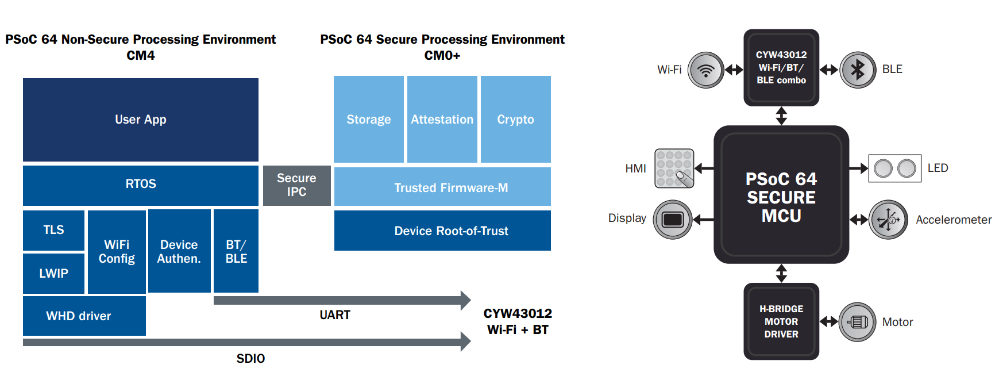

TF-M
ARM 官方文档: https://tf-m-user-guide.trustedfirmware.org/introduction/readme.html
Armv8-M and Armv8.1-M architectures. cortex-m23 cortex-m33 cortex-m55 cortex-m85 或者其他物理核隔离的系统, 比如Cypress PSoC® 64 Secure Microcontrollers;

PSA Certified guidelines SPE <–> NSPE
mcuboot
https://docs.mcuboot.com/design.html 阅读TF-M的官方文档是发现BL2使用是mcuboot这个项目。 mcuboot被设计为一个函数库，官方文档给出的其中一个原因是函数库可以进行单元测试，但是完整的应用不能够(A library can be unit tested, but an application can’t.)。因此，mcuboot并不包含实际跳转到APP执行的代码。